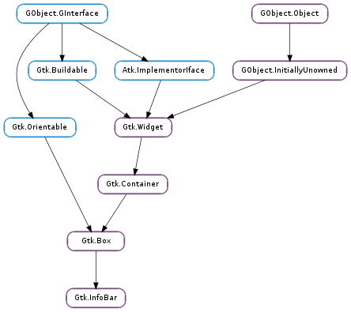

| static | new() |
| add_action_widget(child, response_id) | |
| add_button(button_text, response_id) | |
| get_action_area() | |
| get_content_area() | |
| get_message_type() | |
| get_show_close_button() | |
| response(response_id) | |
| set_default_response(response_id) | |
| set_message_type(message_type) | |
| set_response_sensitive(response_id, setting) | |
| set_show_close_button(setting) |
| Name | Type | Flags | Description |
|---|---|---|---|
| message-type | Gtk.MessageType | r/w | The type of message |
| show-close-button | bool | r/w | Whether to include a standard close button |
| Name | Parameters | Return | Description |
|---|---|---|---|
| close | The ::close signal is a keybinding signal which gets emitted when the user uses a keybinding to dismiss the info bar. The default binding for this signal is the Escape key. | ||
| response | int | Emitted when an action widget is clicked or the application programmer calls Gtk.Dialog.response (). The response_id depends on which action widget was clicked. |
Bases: Gtk.Box
Gtk.InfoBar is a widget that can be used to show messages to the user without showing a dialog. It is often temporarily shown at the top or bottom of a document. In contrast to Gtk.Dialog, which has a action area at the bottom, Gtk.InfoBar has an action area at the side.
The API of Gtk.InfoBar is very similar to Gtk.Dialog, allowing you to add buttons to the action area with Gtk.InfoBar.add_button () or Gtk.InfoBar.new_with_buttons (). The sensitivity of action widgets can be controlled with Gtk.InfoBar.set_response_sensitive (). To add widgets to the main content area of a Gtk.InfoBar, use Gtk.InfoBar.get_content_area () and add your widgets to the container.
Similar to Gtk.MessageDialog, the contents of a Gtk.InfoBar can by classified as error message, warning, informational message, etc, by using Gtk.InfoBar.set_message_type (). GTK+ may use the message type to determine how the message is displayed.
Simple Gtk.InfoBar usage.
/&ast set up info bar &ast/
info_bar = gtk_info_bar_new ();
gtk_widget_set_no_show_all (info_bar, TRUE);
message_label = gtk_label_new ("");
gtk_widget_show (message_label);
content_area = gtk_info_bar_get_content_area (GTK_INFO_BAR (info_bar));
gtk_container_add (GTK_CONTAINER (content_area), message_label);
gtk_info_bar_add_button (GTK_INFO_BAR (info_bar),
_("_OK"), GTK_RESPONSE_OK);
g_signal_connect (info_bar, "response",
G_CALLBACK (gtk_widget_hide), NULL);
gtk_grid_attach (GTK_GRID (grid),
info_bar,
0, 2, 1, 1);
/&ast ... &ast/
/&ast show an error message &ast/
gtk_label_set_text (GTK_LABEL (message_label), error_message);
gtk_info_bar_set_message_type (GTK_INFO_BAR (info_bar),
GTK_MESSAGE_ERROR);
gtk_widget_show (info_bar);
The Gtk.InfoBar implementation of the Gtk.Buildable interface exposes the content area and action area as internal children with the names “content_area” and “action_area”.
Gtk.InfoBar supports a custom <action-widgets> element, which can contain multiple <action-widget> elements. The “response” attribute specifies a numeric response, and the content of the element is the id of widget (which should be a child of the dialogs action_area ).
| Returns: | a new Gtk.InfoBar object |
|---|---|
| Return type: | Gtk.Widget |
Creates a new Gtk.InfoBar object.
| Parameters: |
|
|---|
Add an activatable widget to the action area of a Gtk.InfoBar, connecting a signal handler that will emit the Gtk.InfoBar ::response signal on the message area when the widget is activated. The widget is appended to the end of the message areas action area.
| Parameters: | |
|---|---|
| Returns: | the Gtk.Button widget that was added |
| Return type: |
Adds a button with the given text and sets things up so that clicking the button will emit the “response” signal with the given response_id. The button is appended to the end of the info bars’s action area. The button widget is returned, but usually you don’t need it.
| Returns: | the action area |
|---|---|
| Return type: | Gtk.Widget |
Returns the action area of info_bar.
| Returns: | the content area |
|---|---|
| Return type: | Gtk.Widget |
Returns the content area of info_bar.
| Returns: | the message type of the message area. |
|---|---|
| Return type: | Gtk.MessageType |
Returns the message type of the message area.
| Returns: | True if the widget displays standard close button |
|---|---|
| Return type: | bool |
Returns whether the widget will display a standard close button.
| Parameters: | response_id (int) – the response ID |
|---|
Emitted when an action widget is clicked or the application programmer calls Gtk.Dialog.response (). The response_id depends on which action widget was clicked.
| Parameters: | response_id (int) – a response ID |
|---|
Sets the last widget in the info bar’s action area with the given response_id as the default widget for the dialog. Pressing “Enter” normally activates the default widget.
Note that this function currently requires info_bar to be added to a widget hierarchy.
| Parameters: | message_type (Gtk.MessageType) – a Gtk.MessageType |
|---|
Sets the message type of the message area. GTK+ uses this type to determine what color to use when drawing the message area.
| Parameters: |
|---|
Calls Gtk.Widget.set_sensitive (widget, setting) for each widget in the info bars’s action area with the given response_id. A convenient way to sensitize/desensitize dialog buttons.
| Parameters: | setting (bool) – True to include a close button |
|---|
If true, a standard close button is shown. When clicked it emits the response Gtk.ResponseType.CLOSE.